Datos de los algoritmos de las LHCO 2020
Contenido
Datos de los algoritmos de las LHCO 2020¶
Cada algoritmos de las olimpiadas utilizó un pre-procesamiento de datos de acuerdo al método que utilizaron. En esta sección exploraremos los datos pre-procesados por UCluster y GAN-AE, para comprender mejor su acercamiento al problema.
UCluster¶
Los datos pre-procesados por UCluster definen un punto en la implementación de ABNet. Las variables se describen a continuación:
Variable |
Descripción |
|---|---|
$\Delta\eta |
Diferencia entre la pseudo-rapidez del constituyente y del jet |
$\Delta\phi |
Diferencia entre el ángulo azimutal del constituyente y del jet |
\(\log{p_T}\) |
Logaritmo del \(p_T\) del constituyente |
\(\log{E}\) |
Logaritmo de la \(E\) del constituyente |
\(\log\frac{p_T}{p_T_{jet}}\) |
Logaritmo de la relación entre el \(p_T\) del constituyente y el \(p_T\) del jet |
\(\log\frac{E}{E_{jet}}\) |
Logaritmo de la relación entre la \(E\) del constituyente y la \(E\) del jet |
\(\Delta R\) |
Distancia entre el constituyente y el jet en el espacio \(\eta-\phi\) |
PID |
Identificador del tipo de partícula |
La distribución de estas variables se puede observar en {numref}``.
# Importamos librerias básicas
import pandas as pd
import h5py
import numpy as np
import matplotlib.pyplot as plt
import nexusformat.nexus as nx
from benchtools.src.plotools import bkg_sig_hist
---------------------------------------------------------------------------
ModuleNotFoundError Traceback (most recent call last)
~\AppData\Local\Temp/ipykernel_15132/3390475864.py in <module>
1 # Importamos librerias básicas
2 import pandas as pd
----> 3 import h5py
4 import numpy as np
5 import matplotlib.pyplot as plt
ModuleNotFoundError: No module named 'h5py'
with h5py.File('../../../datos/train_20v_RD_100P_2NJET.h5', 'r') as hdf:
hdfdata = hdf.get('data')
data = np.array(hdfdata)
data.shape
(367153, 100, 7)
columns = ['eta', 'phi', 'ratio_pT', 'ratio_E', 'pT', 'E', 'delta_R']
df = pd.DataFrame(data.mean(axis=(1)), columns = columns)
pid = pd.Series(np.array(h5py.File('../../../datos/train_20v_RD_100P_2NJET.h5', 'r')['pid']))
df = df.assign(label=pid.values)
variables = df.drop('label', axis=1).columns
for variable in variables:
bkg_sig_hist(df, variable=variable, label='label')
plt.show()
 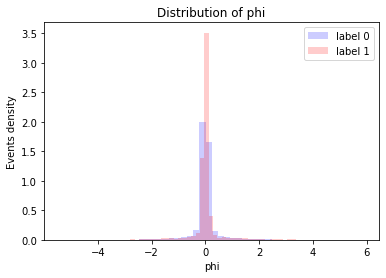
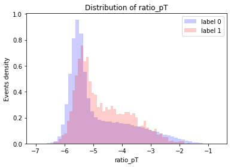
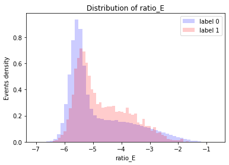
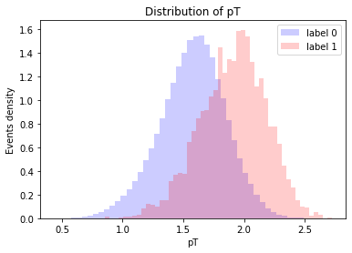
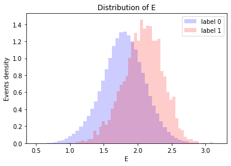
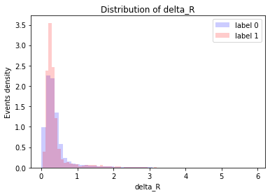
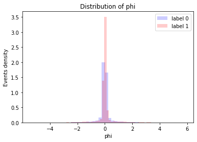
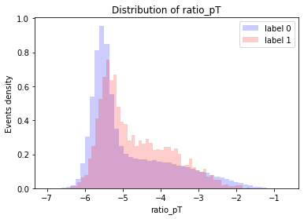
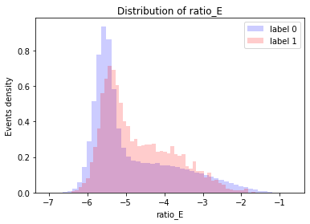
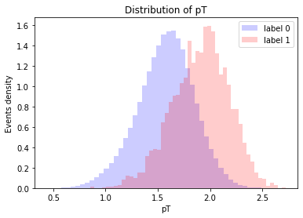
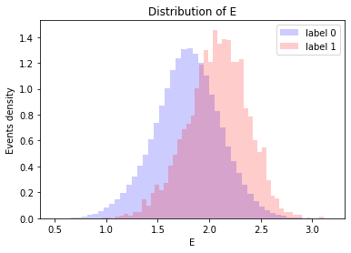
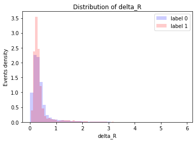
columns=['mass_j1', 'tau12_j1', 'mass_j2', 'tau12_j2']
df_global = pd.DataFrame(np.array(h5py.File('../../../datos/train_20v_RD_100P_2NJET.h5', 'r')['global']), columns=columns)
df_global=df_global.assign(label=pid.values)
for variable in columns:
bkg_sig_hist(df_global, variable=variable, label='label')
plt.show()
# Loading the label dataframe
df_label = pd.DataFrame(np.array(h5py.File('../../../datos/train_20v_RD_100P_2NJET.h5', 'r')['label']))
# Adding the labels
df_label = df_label.assign(label=pid.values)
# Separating signal and background
df_label_bkg = df_label.loc[df_label['label']==0]
df_label_sig = df_label.loc[df_label['label']==1]
MASSRANGE = np.linspace(10,1000,20)
MASSRANGE = np.append(MASSRANGE, [100000])
map_list = []
for x in enumerate(MASSRANGE):
if x[0]==20: break
map_list.append(x)
df_map = pd.DataFrame(map_list, columns=['value', 'mass'])
df_map.head()
df_map = df_map.set_index("value")["mass"]
df_label_map = pd.DataFrame()
# Mapping the values
for col in df_label.drop('label', axis=1):
df_label_map[col] = df_label[col].map(df_map).fillna(df_label[col])
# Adding the labels
df_label_map = df_label_map.assign(label=pid.values)
df_label_map.head()
# Separating signal and background
df_label_bkg = df_label_map.loc[df_label_map['label']==0]
df_label_sig = df_label_map.loc[df_label_map['label']==1]
# Plotting
# 'stack' to plot all the values of each dataframe on the histogram
df_label_bkg.drop('label', axis=1).stack().plot.hist(facecolor='b', alpha=0.2, label='background', density=True)
df_label_sig.drop('label', axis=1).stack().plot.hist(facecolor='r', alpha=0.2, label='signal', density=True)
plt.legend(loc='upper right')
plt.title('Distribución de la variable "label"');

df_masses = pd.DataFrame(np.array(h5py.File('../../../datos/train_20v_RD_100P_2NJET.h5', 'r')['masses']), columns=['mass'])
df_masses=df_masses.assign(label=pid.values)
bkg_sig_hist(df_masses, variable='mass', label='label')
plt.show()
GAN-AE¶
df_bkg = pd.read_hdf('../../../datos/bkgHLF_merged_RnD.h5')
df_sig=pd.read_hdf('../../../datos/sigHLF_merged_RnD.h5')
# I'll add a label variable to plot
df_bkg['label']=0
df_sig['label']=1
df = pd.concat([df_bkg, df_sig])
# I'll list some variables according to
# the feature importance on the presentation
some_variables = ['mjj', 'm1', 'pt2', '21tau1', '21tau2', 'm2',
'nisj1', 'nisj2', 'pt1', '1tau2']
for variable in some_variables:
bkg_sig_hist(df, variable, label='label')
plt.show();
 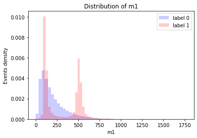
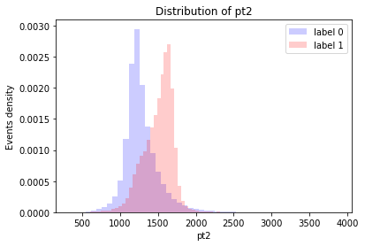
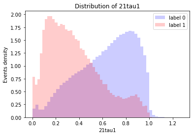
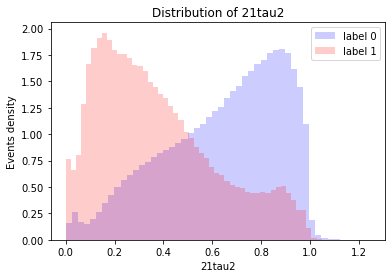
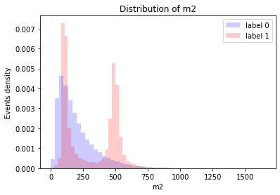
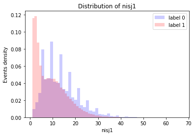
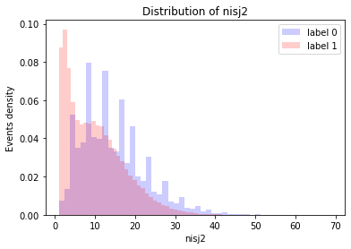
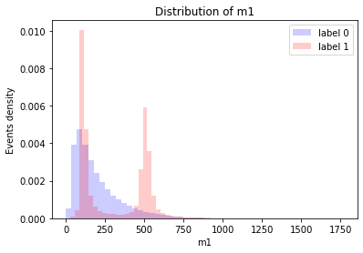
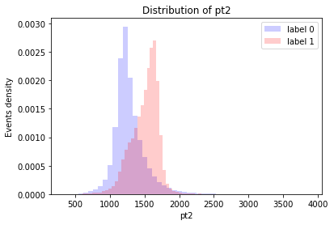
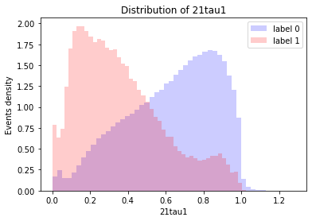
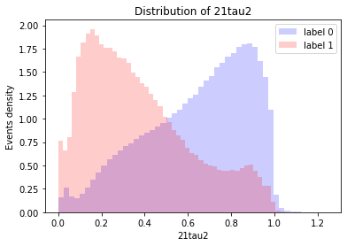
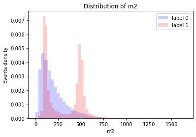
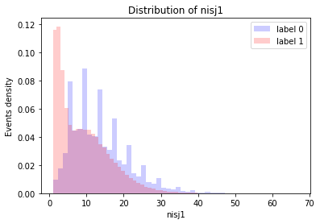
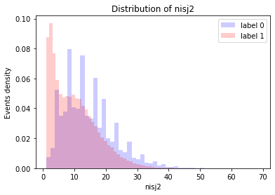
 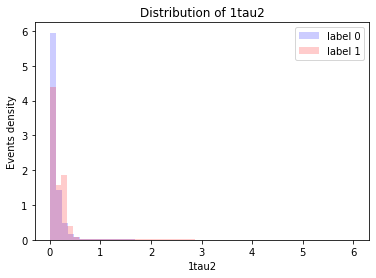
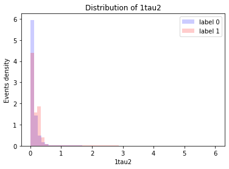